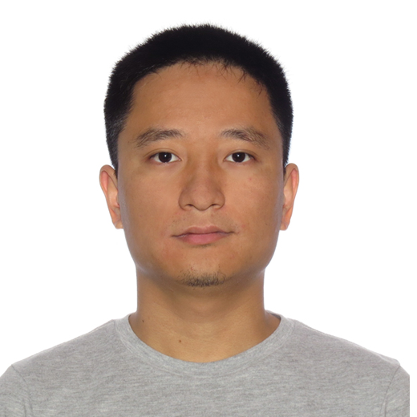

2014/8/11 Our "Morfit" paper is conditionally accepted to SIGGRAPH ASIA 2014
2014/6/15 Code for our paper "'Mind the Gap': Tele-Registration for Structure-Driven Image Completion" is available: http://kangxue.org/Tele-Registration/

News:
2014/8/11 Our "Morfit" paper is conditionally accepted to SIGGRAPH
ASIA 2014
2014/6/15 Code for our paper "'Mind the Gap': Tele-Registration for
Structure-Driven Image Completion" is available:
http://kangxue.org/Tele-Registration/
|
Kangxue Yin yinkangxue [at] gmail.com
Research Assistant This homepage is hosted on my GitHub: https://github.com/kangxue |
 | ||
|
Research Interests Geometric Modeling/Reconstruction, Image/Video Processing, etc.
Education and Employment Jul. 2012 ~ Now, Research Assistant, VCC@SIAT@CAS, Shenzhen, China Publications
1. Kangxue Yin, Hui Huang, Hao(Richard) Zhang, Minglun Gong, Daniel Cohen-or, Baoquan Chen. Morfit: Interactive Surface Reconstruction from Incomplete Point Clouds with Curve-Driven Topology and Geometry Control. ACM Transactions on
Graphics 33(6)(Proc.SIGGRAPH ASIA 2014 )[webpage][code] Research Grant SIAT Innovation Program for Excellent Young Researchers: Studies on Interactive Technique for Surface Reconstruction of Incomplete Point Cloud. 150,000 RMB, Jan.2014~Dec.2015. Selected Honors Annual Excellent Employee, SIAT@CAS, 2013 Technical Skills C/C++, CUDA, Eigen, Matlab, NLopt, OpenCV, OpenGL, OpenMP, PCL, QT, etc. |
|||
|
Last Update: Sep. 9, 2014 |
|||